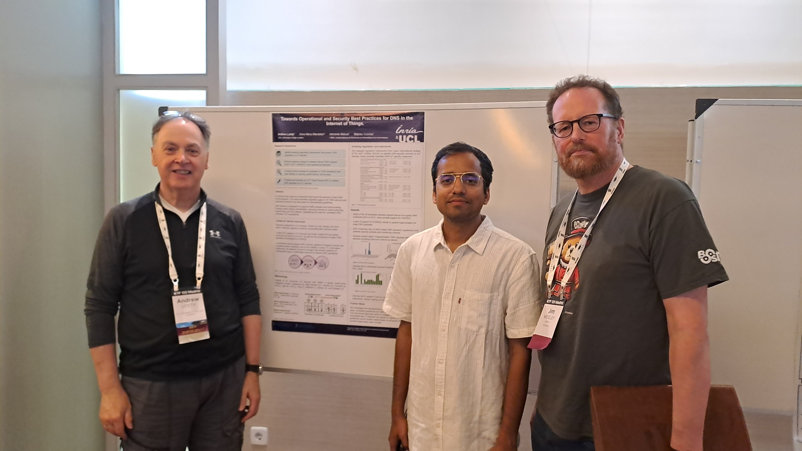

SafeNetIoT
The UCL EEE SafeNetIoT Lab pioneers research into securing the Internet of Things (IoT) across critical environments. We identify and analyze vulnerabilities in IoT systems deployed in smart homes, healthcare facilities, and industrial infrastructures. Our work focuses on designing robust security protocols, privacy-preserving architectures, and real-time threat detection mechanisms tailored to constrained IoT ecosystems.

Recent Activity
September 2025 - Recognition by H.H. the Crown Prince of Kuwait in London
Mohammad Alhussan, PhD candidate at UCL Electronic & Electrical Engineering and member of the SafeNetIoT Lab, was honored to meet His Highness the Crown Prince Sheikh Sabah Khaled Al-Hamad Al-Sabah during a gathering with distinguished Kuwaiti students in London. The occasion also included the Ambassador of Kuwait and the Cultural Office leadership. Special appreciation to Dr. Abdullah Al-Meshal (Cultural Counselor & Head of the Cultural Office) and Dr. Hessah Alojayan (Cultural Attaché) for their invitation and excellent organization.

19-25th July 2025 - ANRW Workshop + IETF 123 meeting Madrid
PhD student Andrew Losty presented Poster at ANRW Workshop. Paper accepted by IETF Towards Operational and Security Best Practices for DNS in the Internet of Things Andrew Losty, Anna Maria Mandalari, Abhishek K. Mishra, Mathieu Cunche. We also submitted IETF draft “RFC IoT DNS Security and Privacy Guidelines”.
7th July 2025 - New York Times Reports on Our Research
The New York Times cites our paper on smart TVs' security and privacy implications in their article on Internet of Things devices.

People
Anna Maria Mandalari
Anna Maria Mandalari works as Assistant Professor at University College London (UCL). She is affiliated with the Electronic and Electrical Engineering Department, where she is the Director of the SafeNetIoT laboratory and the Director of the Internet Engineering/ Telecommunications MSc/ MRes Programme.
Aurelio Loris Canino
Aurelio is a visiting researcher from Mediterranea University of Reggio Calabria, working on real privacy risks in everyday web browsing.
Research
Hacking Health: Unveiling Vulnerabilities in Wireless Wearable Sensors
Mohammad Alhussan highlights the potential vulnerabilities in wearable medical devices that utilise Bluetooth Low Energy (BLE) for communication. He shows how these attacks can compromise not only the confidentiality and integrity of potentially sensitive medical data transmitted by wearable medical devices, but also patients’ privacy and safety as well as sensors’ reliability
An Investigation of Matter Smart Home Mechanisms to Mitigate Denial-of-Service (DoS) Attacks
Andrew Losty's research examines the relatively new open-source Smart Home automation protocol, Matter. This protocol aims to unify the Smart Home ecosystem, eliminating the need for multiple apps and competing architectures, and is supported by over 270 manufacturers, including major tech leaders such as Amazon, Google, Apple, and Samsung.
Enabling Lawful Interception in Environments Protected by IoT Safeguard
Aurelio Canino's work analyzes a novel challenge: the potential exploitation of IoT devices for covert lawful interceptions, circumventing existing IoT safeguards. In this paper, a system to clandestinely capture audio or video data from IoT devices without an IoT safeguard being able to detect it is defined.
Get in touch
Please do not hesitate to reach out to collaborate etc.